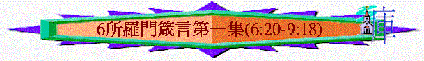

|
所羅門箴言第一集 |
所羅門箴言第二集 |
所羅門箴言第三集 |
其他人的言語附篇 |
|
1 - 9 |
10-24 |
25-29 |
30-31 |
A.教誨持守
「我兒，要謹守你父親的誡命；不可離棄你母親的法則（或作：指教），要常繫在你心上，掛在你項上。」6:20-21
B.淫行的禍患
a.戀慕妓女的禍患
「你心中不要戀慕他的美色，也不要被他眼皮勾引。因為，妓女能使人只剩一塊餅；淫婦獵取人寶貴的生命。」6:25-26
b.親近人妻的禍患
「親近鄰舍之妻的，也是如此；凡挨近他的，不免受罰。賊因飢餓偷竊充飢，人不藐視他，若被找著，他必賠還七倍，必將家中所有的盡都償還。」6:29-31
c.與人行淫的禍患
「與婦人行淫的，便是無知；行這事的，必喪掉生命。他必受傷損，必被凌辱；他的羞恥不得塗抹。」6:32-33
13.第十三篇訓誨----借例：被勾引的少年(7)
A.遠離淫婦的秘訣----謹守智慧
「我兒，你要遵守我的言語，將我的命令存記在心。遵守我的命令就得存活；保守我的法則（或作：指教），好像保守眼中的瞳人，繫在你指頭上，刻在你心版上。對智慧說：你是我的姊妹，稱呼聰明為你的親人，他就保你遠離淫婦，遠離說諂媚話的外女。」7:1-5
B.少年被誘的鑑戒
a.走近試探
「見愚蒙人內，少年人中，分明有一個無知的少年人，從街上經過，走近淫婦的巷口，直往通他家的路去，」7:7-8
b.主動誘惑
(1)主動迎接
「看哪，有一個婦人來迎接他，是妓女的打扮，有詭詐的心思。」7:10
(2)心思打扮
(3)親熱接觸
「拉住那少年人，與他親嘴，臉無羞恥對他說：」7:13
(4)花言巧語
「平安祭在我這裡，今日才還了我所許的願。」7:14
～平安祭的意義是人感受到神的恩，願意對神有所獻，也與其他人分享祭物，妓女可能在廟宇行淫，以自己的身體為平安祭，願與人一同分享快樂！
(5)刻意預備
「因此，我出來迎接你，懇切求見你的面，恰巧遇見了你。我已經用繡花毯子和埃及線織的花紋布鋪了我的床。」7:15-16
(6)安穩保障
「因為我丈夫不在家，出門行遠路；他手拿銀囊，必到月望才回家。」7:19-20
c.少年反應
(1)立刻跟隨
「少年人立刻跟隨他，好像牛往宰殺之地，又像愚昧人帶鎖鍊去受刑罰，」7:22
(2)不知惡果
「直等箭穿他的肝，如同雀鳥急入網羅，卻不知是自喪己命。」7:23
C.不偏淫婦的提醒
「眾子啊，現在要聽從我，留心聽我口中的話。你的心不可偏向淫婦的道，不要入他的迷途。」7:24-25
14.第十四篇訓誨----啟示：智慧的本源(8)
～此段將智慧比喻為人，也預表了創造天地的主----基督
A.智慧的呼喊
「智慧豈不呼叫？聰明豈不發聲？他在道旁高處的頂上，在十字路口站立，在城門旁，在城門口，在城門洞，大聲說：」8:1-3
B.智慧的寶貴
a.勝過一切的物質
「你們當受我的教訓，不受白銀；寧得知識，勝過黃金。因為智慧比珍珠（或作：紅寶石）更美；一切可喜愛的都不足與比較。」8:10-11
「我的果實勝過黃金，強如精金；我的出產超乎高銀。」8:19
b.王用之治理國家
「我有謀略和真知識；我乃聰明，我有能力。帝王藉我坐國位；君王藉我定公平。王子和首領，世上一切的審判官，都是藉我掌權。」8:14-16
C.智慧的本源
「在耶和華造化的起頭，在太初創造萬物之先，就有了我。從亙古，從太初，未有世界以前，我已被立。沒有深淵，沒有大水的泉源，我已生出。」箴8:22-24
｢要叫他們的心得安慰、因愛心互相聯絡、以致豐豐足足在悟性中有充足的信心、使他們真知 神的奧秘、就是基督．所積蓄的一切智慧知識、都在他裡面藏著。｣西2:2-3
～不同解經家對箴8:22-31所提及的「我」有不同的解釋，有人說這「我」是講智慧，將智慧擬人法，描述神用祂的智慧創造天地，而另一些解經家卻說應是指向基督，從上下文及整卷書的內容而看，是指智慧，但若細看這「我」及用新約聖經作比較，此段經文也預表了基督，原因如下
a.太初之先
「在耶和華造化的起頭，在太初創造萬物之先，就有了我。從亙古，從太初，未有世界以前，我已被立。」箴8:22-23
「太初有道，道與神同在，道就是神。」約1:1
b.與神同在
「他立高天，我在那裡；他在淵面的周圍，劃出圓圈。」箴8:27
「父啊，現在求你使我同你享榮耀，就是未有世界以先，我同你所有的榮耀。」約17:5
「（這生命已經顯現出來，我們也看見過，現在又作見證，將原與父同在、且顯現與我們那永遠的生命、傳給你們。）」約壹1:2
c.參與創造
「為滄海定出界限，使水不越過他的命令，立定大地的根基。那時，我在他那裡為工師，日日為他所喜愛，常常在他面前踴躍，」箴8:29-30
「愛子是那不能看見之神的像，是首生的，在一切被造的以先。因為萬有都是靠他造的，無論是天上的，地上的；能看見的，不能看見的；或是有位的，主治的，執政的，掌權的；一概都是藉著他造的，又是為他造的。」西1:15-16
d.與人同住
「踴躍在他為人預備可住之地，也喜悅住在世人之間。」箴8:31
「道成了肉身，住在我們中間，充充滿滿的有恩典有真理。我們也見過他的榮光，正是父獨生子的榮光。」約1:14
～從上文的經文來看，基督同樣是擁有神的智慧，祂也是創造天地，與父神同在，喜悅住在人中間，所以箴8:22-31所講的「我」也預表了基督
D.智慧的福樂
「眾子啊，現在要聽從我，因為謹守我道的，便為有福。要聽教訓就得智慧，不可棄絕。聽從我、日日在我門口仰望、在我門框旁邊等候的，那人便為有福。」8:32-34
15.第十五篇訓誨----智愚的對照(9)
A.智慧的呼叫----勸愚昧人回轉
「智慧建造房屋，鑿成七根柱子，宰殺牲畜，調和旨酒，設擺筵席；打發使女出去，自己在城中至高處呼叫，說：誰是愚蒙人，可以轉到這裡來！又對那無知的人說：你們來，吃我的餅，喝我調和的酒。你們愚蒙人，要捨棄愚蒙，就得存活，並要走光明的道。」9:1-6
～七根柱子----是支撐屋的柱子
B.智愚的分別
a.對人提醒的不同反應
(1)惡人----恨人不聽教
「指斥褻慢人的，必受辱罵；責備惡人的，必被玷污。不要責備褻慢人，恐怕他恨你；要責備智慧人，他必愛你。」9:7-8
(2)智慧人----謙虛得智慧
「教導智慧人，他就越發有智慧；指示義人，他就增長學問。敬畏耶和華是智慧的開端；認識至聖者便是聰明。」9:9-10
b.生命年日的不同結局
(1)智慧人----必增日子
「你藉著我，日子必增多，年歲也必加添。」9:11
(2)褻慢人----獨自擔當
「你若有智慧，是與自己有益；你若褻慢，就必獨自擔當。」9:12
C.愚昧的喧嚷----引人進到愚昧
「愚昧的婦人喧嚷；他是愚蒙，一無所知。他坐在自己的家門口，坐在城中高處的座位上，呼叫過路的，就是直行其道的人，說：誰是愚蒙人，可以轉到這裡來！又對那無知的人說：偷來的水是甜的，暗吃的餅是好的。人卻不知有陰魂在他那裡；他的客在陰間的深處。」9:13-18